The next food for analysis is beans. Which similar to rice is a more international food, so there is much more diversity in the data.
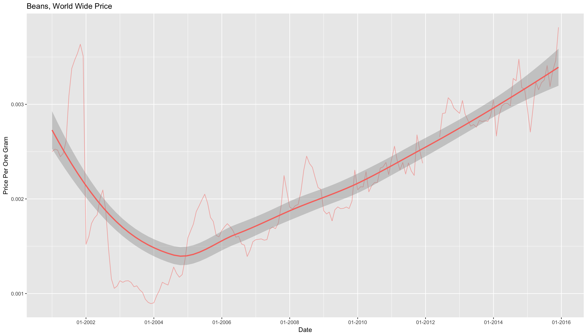
Here we can see that there has been a dramatic increase in price over the last few years. Additionally, it does not look like the price was affected by drought in Southern Africa. The spike you saw in 2001 is caused by a few high prices from Guatemala.
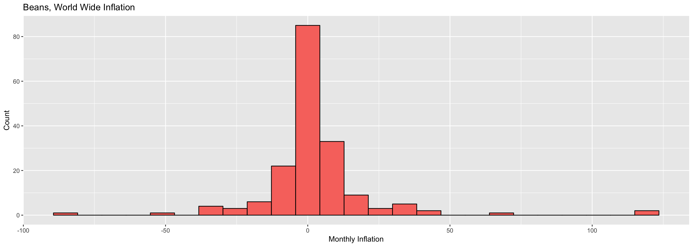
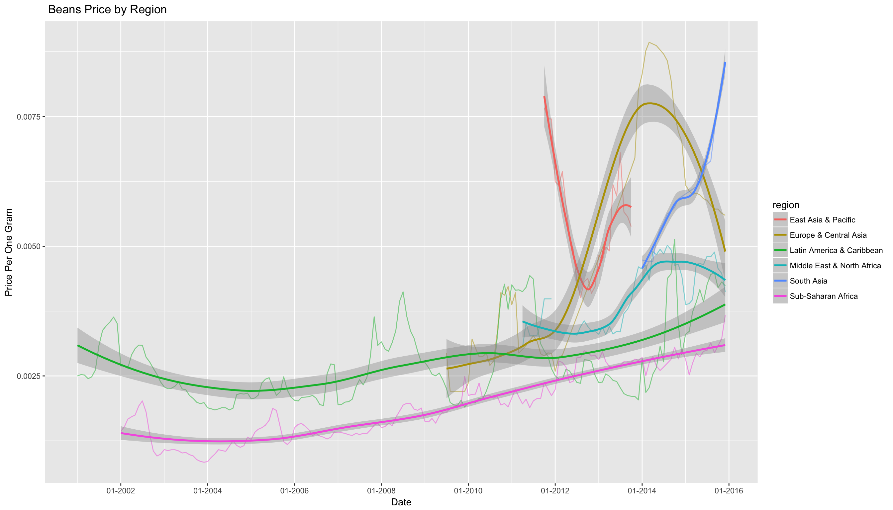
There is still an overall increase in the price of beans across all regions.
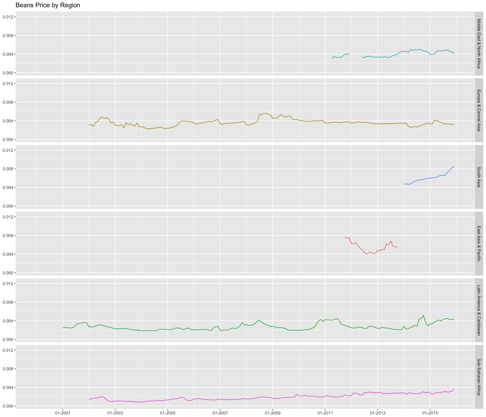
Prices of beans vary greatly from region to region, but Sub-Saharan Africa has the lower prices for beans.
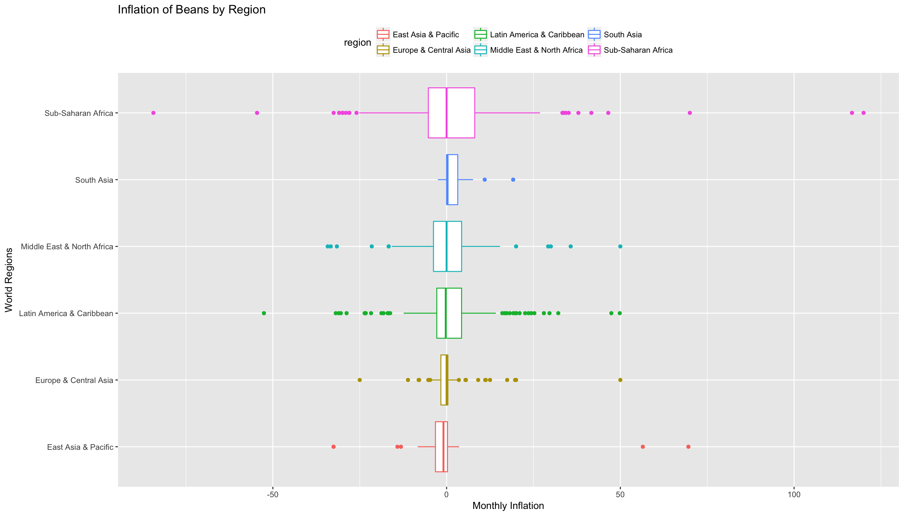
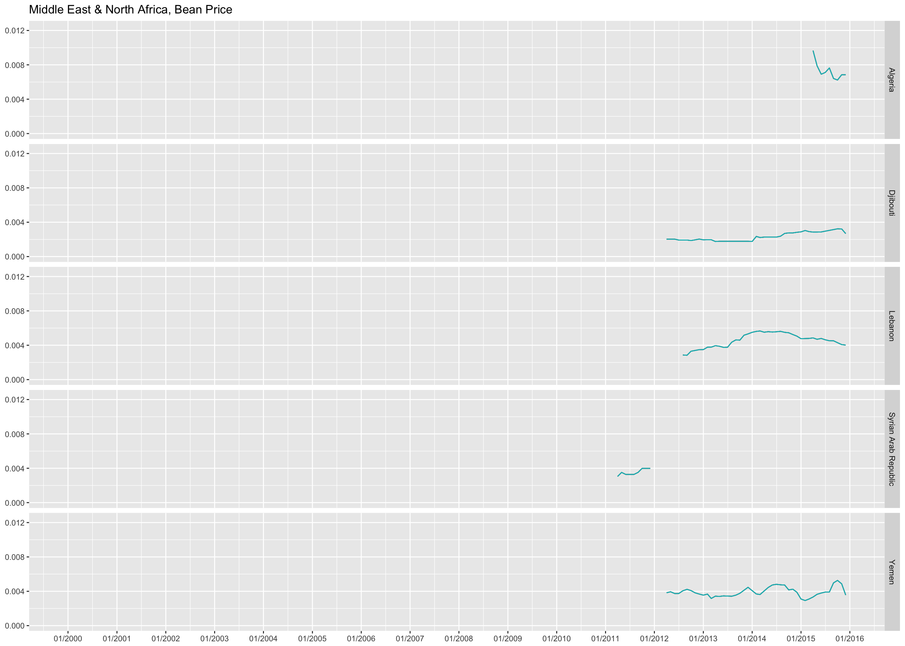 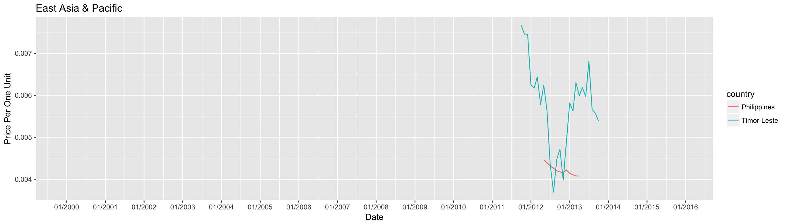 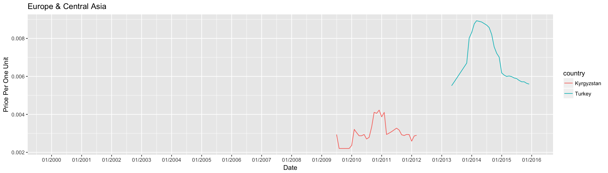 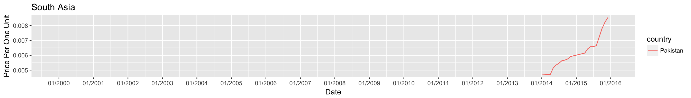 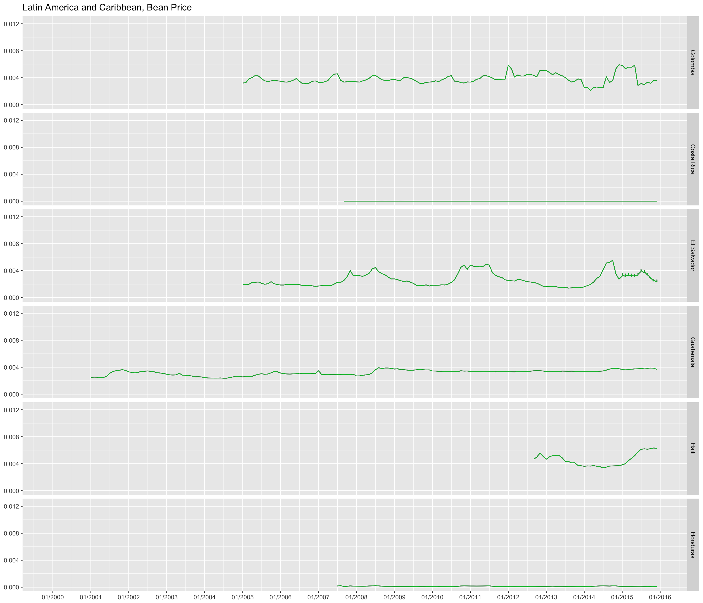 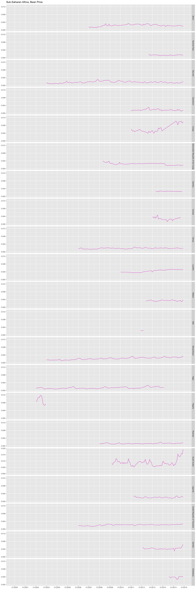
Like regions, the price varies greatly between countries. The countries with the highest prices are Turkey, Congo, Nigeria and South Sudan In Turkey we see prices increase as they take in more Syrian refugees. From June 2014 Turkey had taken in over 750,000 Syrian refugees, this number grew to over 1,700,000 by the same time in 2015 Crisis Group. The price increase in Congo could be to an increase in Congo cocoa and coffee beans, but this can not be confirmed.
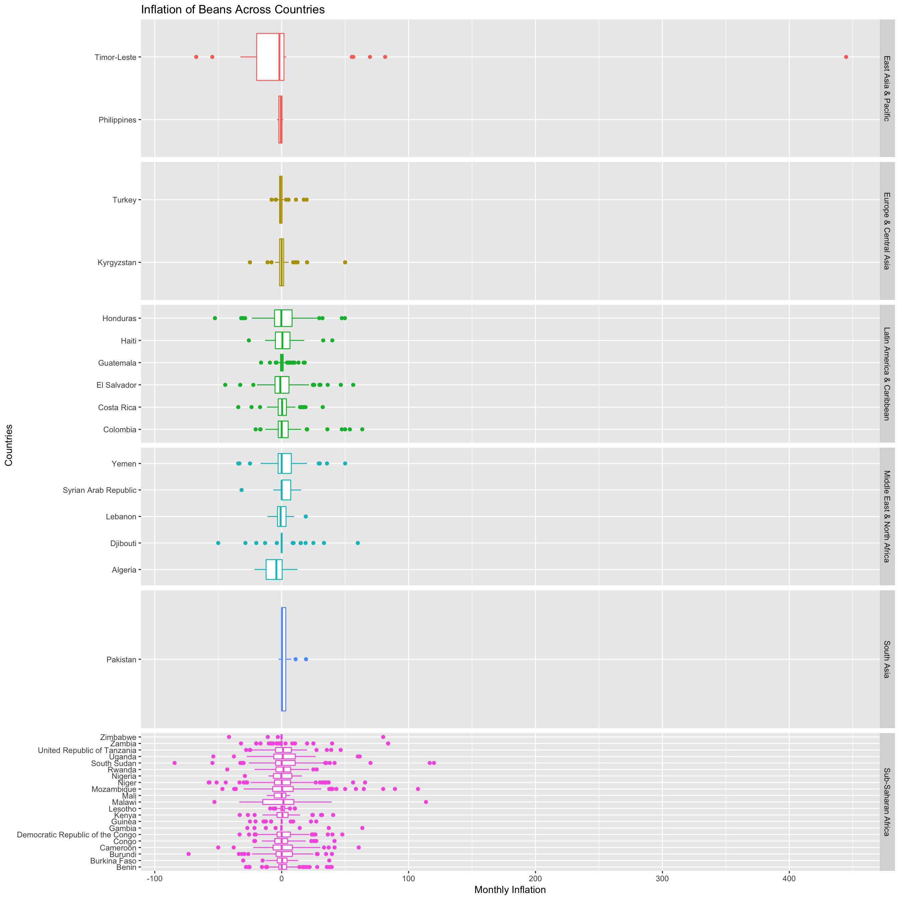
Countries that have an unstable inflation are Timor-Leste and Malawi. In recently year Timor-Leste has been effected greatly by climate change and population growth. Also poor and unstable agricultural resources are prevalent with only 30% of arable land being used for cropping or in combination with animal grazing Government of Timor-Leste.
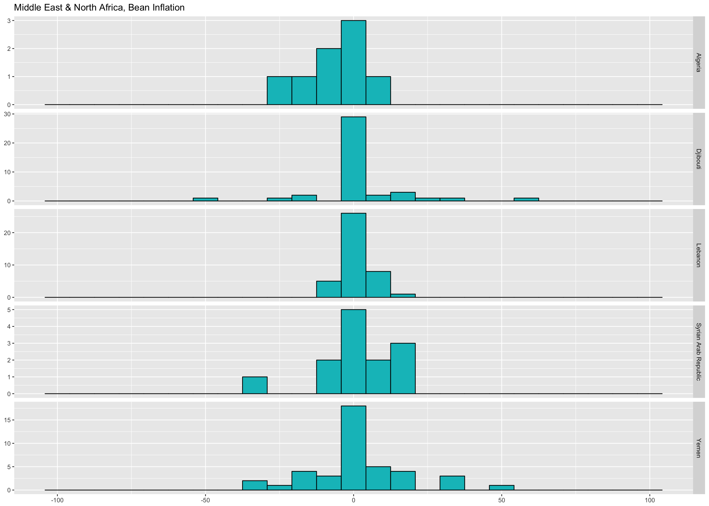 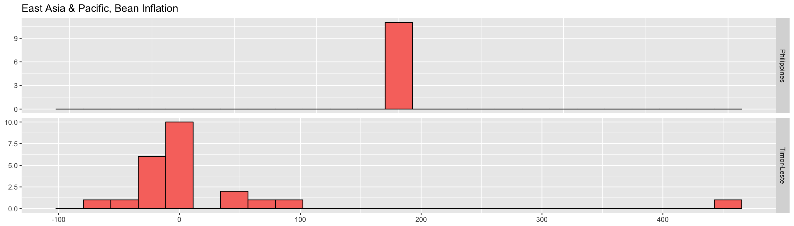 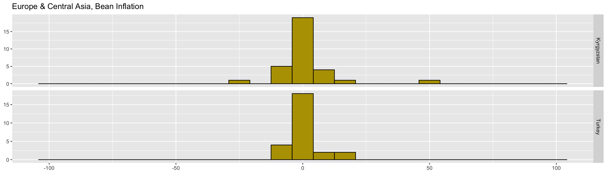 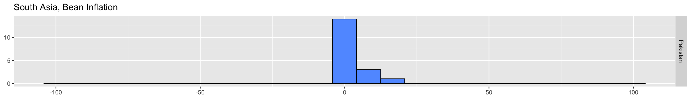 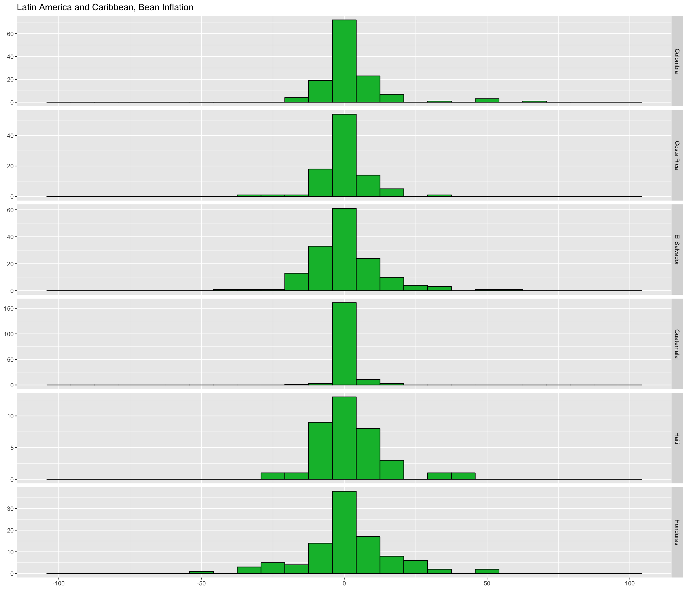 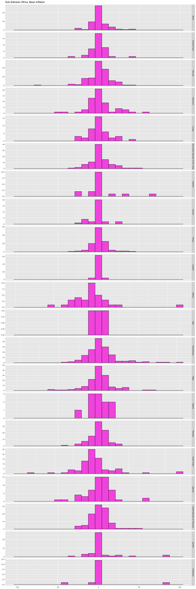
| country | avg_infla | stdev |
|---|---|---|
| Guatemala | 11.2484599 | 200.232865 |
| Timor-Leste | 9.8367071 | 79.654026 |
| Guinea | 9.1147371 | 56.739994 |
| Kenya | 6.9704964 | 162.635734 |
| South Sudan | 5.1909562 | 35.449598 |
| Zambia | 4.2280869 | 32.447114 |
| Malawi | 3.3942803 | 26.943321 |
| Niger | 3.2637883 | 30.323091 |
| United Republic of Tanzania | 2.5069687 | 29.854245 |
| Kyrgyzstan | 2.0565466 | 19.300050 |
| Cameroon | 1.9543032 | 20.678663 |
| Burundi | 1.9118911 | 18.309884 |
| Gambia | 1.8051661 | 19.062969 |
| Mozambique | 1.7860445 | 18.491745 |
| Pakistan | 1.5369900 | 11.858894 |
| Syrian Arab Republic | 1.5121520 | 10.966091 |
| Burkina Faso | 1.5030654 | 21.637393 |
| Zimbabwe | 1.4972735 | 18.947936 |
| Congo | 1.4566455 | 18.208162 |
| Uganda | 1.4563805 | 16.935330 |
| Yemen | 1.2538537 | 16.117315 |
| Democratic Republic of the Congo | 1.2320596 | 18.435637 |
| Djibouti | 1.1629961 | 13.248671 |
| Mali | 1.1012719 | 10.114794 |
| Colombia | 1.0522304 | 15.440143 |
| Lebanon | 1.0437993 | 14.655603 |
| El Salvador | 0.9982438 | 15.107167 |
| Benin | 0.9722689 | 13.673432 |
| Rwanda | 0.9523209 | 13.612617 |
| Algeria | 0.9376104 | 20.888967 |
| Haiti | 0.9195893 | 12.089384 |
| Turkey | 0.8093921 | 6.316882 |
| Honduras | 0.8010441 | 15.748919 |
| Costa Rica | 0.3808707 | 8.172422 |
| Lesotho | 0.3322849 | 6.360872 |
| Philippines | 0.1160524 | 7.549699 |
| Nigeria | -0.5409871 | 12.681430 |
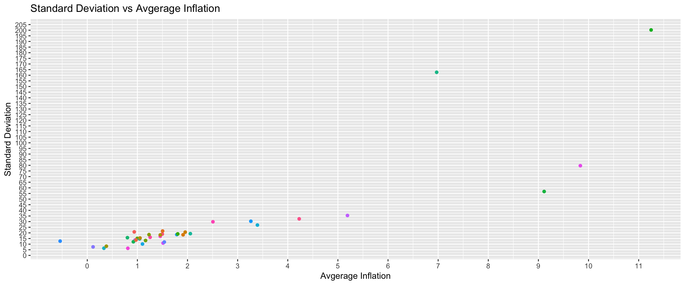